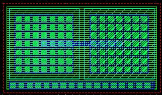
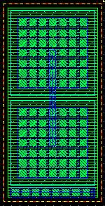
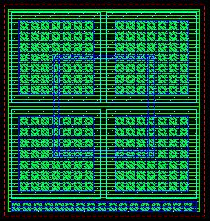

c3t_mp rows and columns properties
these layouts show the effect of varying the rows and columns properties for an example c3t_mp cap
rows = 1, columns = 1 (this is the default)
rows = 1, columns = 2

rows = 2, columns = 1

rows = 2, columns = 2
